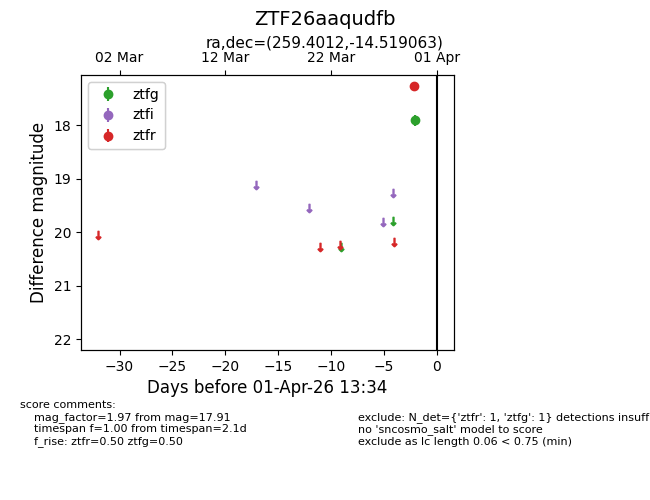
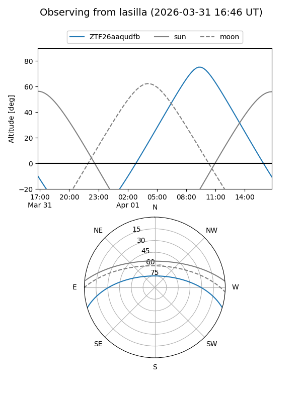
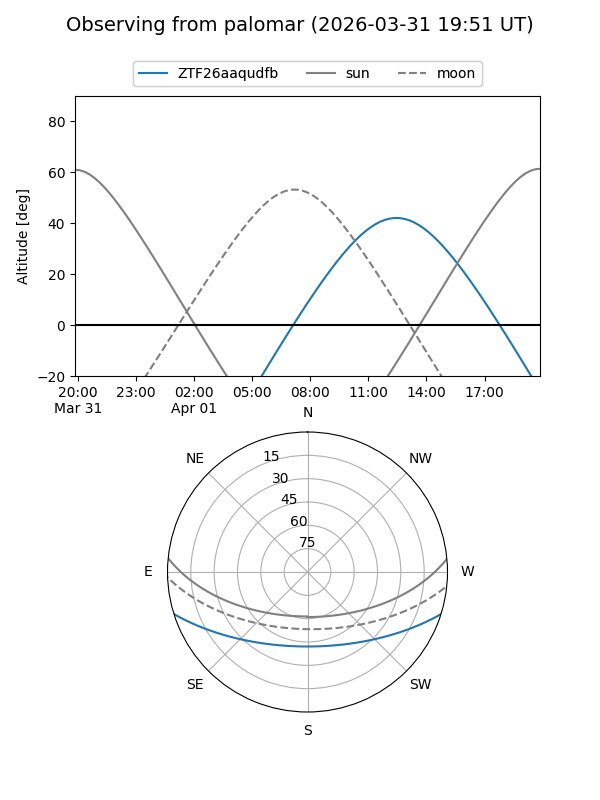

ZTF26aaqudfb
Target ZTF26aaqudfb at 2026-04-01 13:37
Aliases and brokers:
FINK: link
Lasair: link
ALeRCE: link
alt names
ZTF26aaqudfb (ztf,fink_ztf)
Coordinates:
equatorial (ra, dec) = 259.4012,-14.51906
equatorial (HMS+DMS) = 17:17:36.30,-14:31:08.63
galactic (l, b) = (8.7461,+13.21798)
Flags:
Photometry:
last ztfg=17.91, ztfr=17.26
1 ztfg, 1 ztfr detections
Lightcurve

Visibility


Additional plots